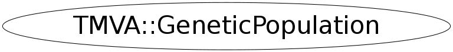

Function Members (Methods)
public:
private:
| TMVA::MsgLogger& | Log() const |
| TMVA::GeneticGenes | MakeSex(TMVA::GeneticGenes male, TMVA::GeneticGenes female) |
Data Members
private:
| vector<TMVA::GeneticGenes> | fGenePool | the "genePool" where the individuals of the current generation are stored |
| TMVA::MsgLogger* | fLogger | message logger |
| Int_t | fPopulationSizeLimit | |
| TRandom3* | fRandomGenerator | random Generator for this population |
| vector<TMVA::GeneticRange*> | fRanges | contains the ranges inbetween the values of the coefficients have to be |
Class Charts
{kind=link}
{kind=link}
{kind=link}
{kind=link}

Function documentation
void MakeCopies(int number)
produces offspring which is are copies of their parents
Parameters:
int number : the number of the last individual to be copied
void MakeChildren()
does what the name says,... it creates children out of members of the current generation children have a combination of the coefficients of their parents
TMVA::GeneticGenes MakeSex(TMVA::GeneticGenes male, TMVA::GeneticGenes female)
this function takes two individuals and produces offspring by mixing (recombining) their coefficients
void Mutate(Double_t probability = 20, Int_t startIndex = 0, Bool_t near = kFALSE, Double_t spread = 0.1, Bool_t mirror = kFALSE)
mutates the individuals in the genePool
Parameters:
double probability : gives the probability (in percent) of a mutation of a coefficient
int startIndex : leaves unchanged (without mutation) the individuals which are better ranked
than indicated by "startIndex". This means: if "startIndex==3", the first (and best)
three individuals are not mutaded. This allows to preserve the best result of the
current Generation for the next generation.
Bool_t near : if true, the mutation will produce a new coefficient which is "near" the old one
(gaussian around the current value)
double spread : if near==true, spread gives the sigma of the gaussian
Bool_t mirror : if the new value obtained would be outside of the given constraints
the value is mapped between the constraints again. This can be done either
by a kind of periodic boundary conditions or mirrored at the boundary.
(mirror = true seems more "natural")
TMVA::GeneticGenes* GetGenes(Int_t index)
gives back the "Genes" of the population with the given index.
void Print(Int_t untilIndex = -1)
make a little printout of the individuals up to index "untilIndex" this means, .. write out the best "untilIndex" individuals.
void Print(ostream& out, Int_t utilIndex = -1)
make a little printout to the stream "out" of the individuals up to index "untilIndex" this means, .. write out the best "untilIndex" individuals.
vector<Double_t> VariableDistribution(Int_t varNumber)
gives back all the values of coefficient "varNumber" of the current generation
void AddPopulation( GeneticPopulation *strangers )
add another population (strangers) to the one of this GeneticPopulation
void AddPopulation( GeneticPopulation &strangers )
add another population (strangers) to the one of this GeneticPopulation
void GiveHint(vector<Double_t>& hint, Double_t fitness = 0)
add an individual (a set of variables) to the population if there is a set of variables which is known to perform good, they can be given as a hint to the population
GeneticPopulation(const vector<TMVA::Interval*>& ranges, Int_t size, UInt_t seed = 0)